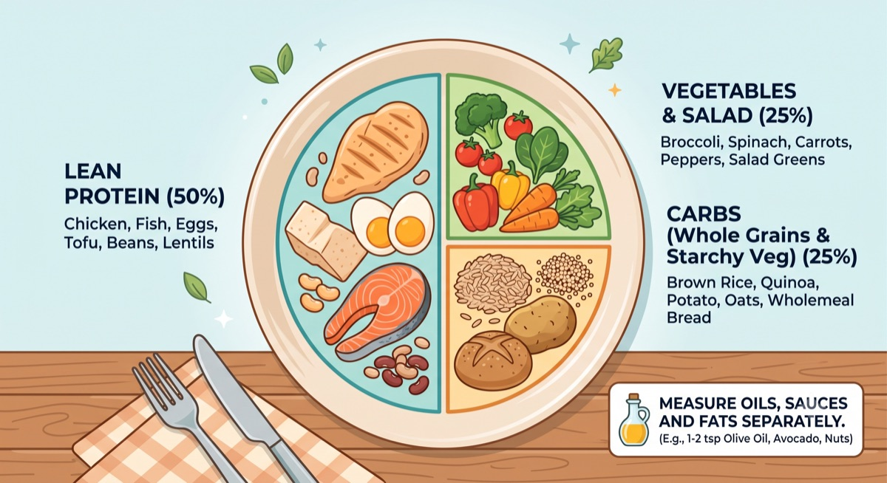
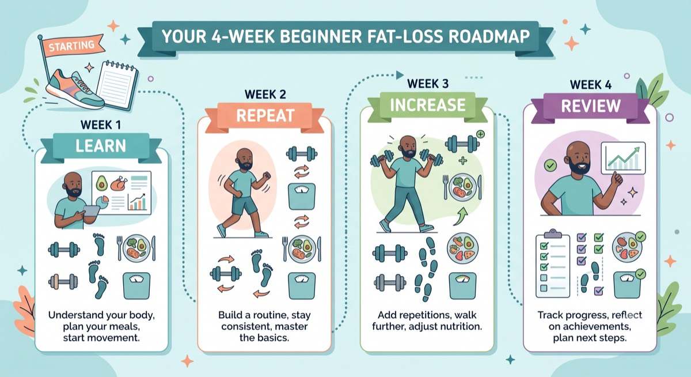
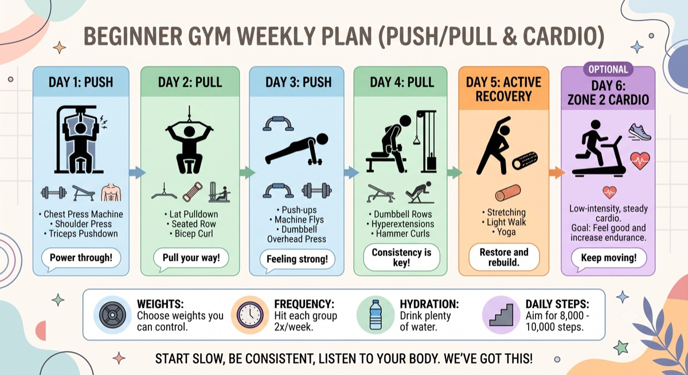
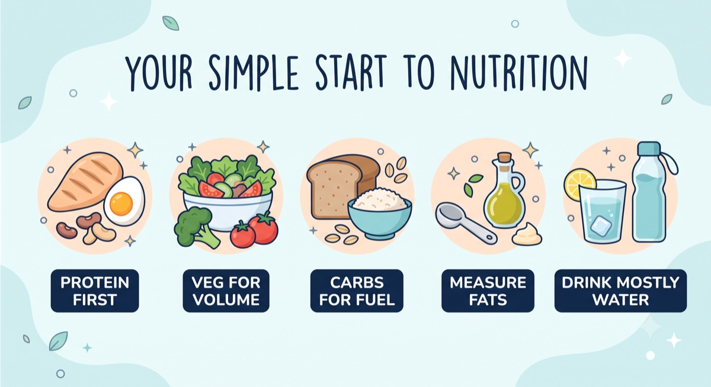
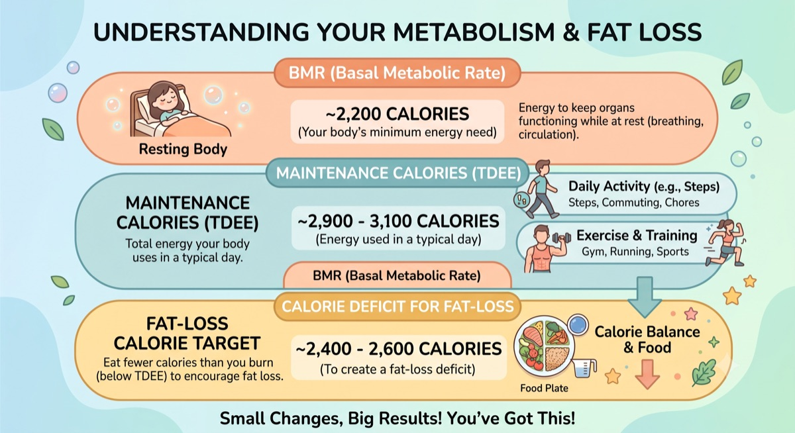
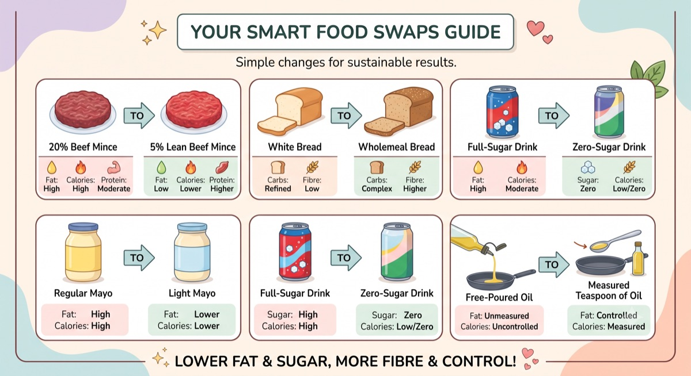
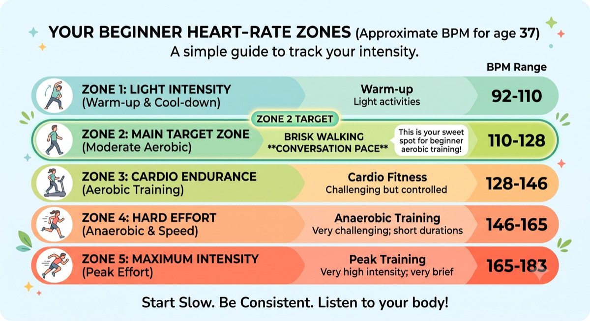
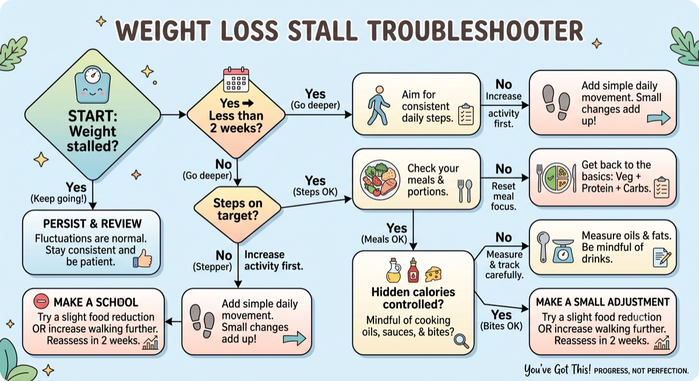

Machine Chest Press
Push
3 sets
8–12 reps
Focus: main chest movement. Controlled reps, 1–3 reps left in the tank.
A simple weekly system for fat loss, strength and fitness. No calorie counting required — just a routine you can actually stick to.

The five things that matter most, every single day.
Tracking: bodyweight, steps and workouts — using whatever tool is easiest for you.
Realistic pace: 0.5–1.0kg per week on average.
Push and Pull each come in an A and B version — examples, not rules. Use whichever fits your equipment, confidence and how you're feeling that day.
Today's essentials are above. These are the full sections — dip in whenever you need them.
Where you're headed, week by week — steps and expected pace.

A steady, sustainable pace is 0.5–1.0kg per week on average. Some weeks will be faster, some slower — that's completely normal.
One weigh-in doesn't tell you much. See Learn → Progress & Scale Fluctuations for why, or jump to Help if the trend has genuinely stalled for 2–4 weeks.
4 resistance sessions a week, alternating Push and Pull, each finished with an incline walk.

Beginner mistake: treating Push A/B and Pull A/B as fixed rules. They're examples, not rigid rules — use whichever version fits the equipment that's free, your confidence, and how you're feeling on the day.
Focus: main chest movement. Controlled reps, 1–3 reps left in the tank.
Focus: targets upper chest. Same effort as the main press.
Focus: builds shoulder strength and stability.
Focus: shoulder width. Light weight, strict form.
Focus: finishes off the triceps after pressing.
Focus: simple leg add-on for push days.
Focus: controlled pace. Breathing harder, but still in control.
Focus: today's main chest movement — upper chest emphasis.
Focus: second chest movement, same effort as the main lift.
Focus: builds shoulder strength and stability.
Focus: chest isolation. Slow and controlled.
Focus: finishes off the triceps after pressing.
Focus: simple leg add-on for push days.
Focus: controlled pace. Breathing harder, but still in control.
Focus: main back movement. Pull with your back, not just your arms.
Focus: second back movement, same effort as the main pull.
Focus: rear shoulders and posture. Light weight, strict form.
Focus: biceps finisher after pulling.
Focus: second arms movement — different grip, same effort.
Focus: simple leg add-on for pull days.
Focus: controlled pace. Breathing harder, but still in control.
Focus: main back movement. Pull with your back, not just your arms.
Focus: second back movement, same effort as the main pull.
Focus: rear shoulders and posture. Light weight, strict form.
Focus: biceps finisher after pulling.
Focus: second arms movement, same effort.
Focus: simple leg add-on for pull days.
Focus: controlled pace. Breathing harder, but still in control.
Track workouts somewhere simple — app, notes, spreadsheet or notebook. Whatever you'll actually keep using.
Practical eating, not perfect dieting — a set of habits you can keep.

Measure fats, oils and sauces separately. Swapping a free pour for a spoon — e.g. 1–2 tsp olive oil, avocado, nuts — does more for calorie control than almost anything else on this page. See Hidden Calories for real examples.
Why this matters: protein helps keep you full, protects muscle while you're in a calorie deficit, and takes more effort for your body to digest.
What to do: aim to include a protein source at most meals — chicken, fish, eggs, dairy, tofu or legumes all count.
Simple rule: carbs fuel your training and daily energy — there's no need to cut them out. Rice, potatoes, oats and bread all fit into a fat-loss plan.
What to do: watch portion size, not avoidance. See Food Swaps for lower-calorie versions of the same carbs.
Beginner mistake: free-pouring oil or piling on cheese and nuts without measuring — fats are calorie-dense, so small amounts go a long way.
What to do: measure oils, butter, nuts, cheese and dressings, even roughly. See Calories & Macro Targets for how this fits your daily numbers.
What to do: you don't need to cut sugar out completely — just be aware of how easily it adds up.
Sugary foods and drinks are easy to overconsume: they're often less filling than whole food, and liquid calories in particular are easy to miss. Meals built around protein and fibre tend to keep you fuller for longer, which naturally makes portion control easier. See real examples in Hidden Calories and Food Swaps.
Simple rule: water should make up most of what you drink. Tea and coffee are fine. Be mindful of lattes, juices and full-sugar soft drinks — see Hidden Calories for real examples.
What to do: you don't need to track calories to make progress. But if you're curious, logging everything you eat and drink for a single day (using any free app) can be a useful awareness exercise — it often reveals where hidden calories are creeping in. This is optional, not a requirement.
Optional deep-dives into the numbers and reasoning behind the plan. Skip this entirely if you just want to follow along — nothing here is required.
You don't need to count calories to lose fat on this plan. These numbers are here for education, and as a reference if you ever want them.

Based on 37 years old, 124kg, 183cm, male.
Carbs fill in the flexible remainder once protein and fat are set.
In plain terms: BMR (Basal Metabolic Rate) is roughly the energy your body needs just to function at rest — breathing, circulation, organ function. It's your body's minimum energy requirement, estimated here at around 2,200 calories/day.
In plain terms: maintenance calories (TDEE) are the total energy your body uses in a typical day — BMR plus daily activity (steps, chores) plus exercise. Estimated at 2,900–3,100 calories/day once steps and training are consistent. Eating at this level keeps your weight roughly stable.
| Calories | Protein | Fat | Carbs |
|---|---|---|---|
| 2,400 | 180g | 75g | 250g |
| 2,500 | 180g | 80g | 265g |
| 2,600 | 190g | 80g | 280g |
| 2,700 | 190g | 85g | 295g |
How this maps to your plate: the protein portion of your plate covers most of your protein target, the carb portion covers most of your carbs, and the "measured separately" fats (oils, butter, nuts, cheese) are usually where your fat target comes from. You don't need to weigh anything to follow this — the plate method gets you close without the maths.
Simple, sustainable swaps — no food is off-limits, but small changes add up.

Key takeaway: leaner cuts and lower-fat versions of the same food often cost 50–150 fewer calories for a similar amount of protein — an easy win with no willpower required.
Swipe sideways to see the full table →
| Food | Amount | Calories | Protein | Carbs | Fat | Sugar | Fibre | Note |
|---|---|---|---|---|---|---|---|---|
| Chicken breast | 100g | 165 | 31g | 0g | 3.6g | 0g | 0g | Go-to lean protein |
| Chicken thigh | 100g | 209 | 26g | 0g | 10.9g | 0g | 0g | Slightly more fat, still great |
| Chicken wing | 100g | 203 | 30g | 0g | 8.1g | 0g | 0g | Watch the skin/sauce |
| Turkey breast | 100g | 135 | 30g | 0g | 1g | 0g | 0g | Very lean |
| Beef mince 5% | 100g | 137 | 21g | 0g | 5g | 0g | 0g | Best value lean mince |
| Beef mince 12% | 100g | 184 | 20g | 0g | 12g | 0g | 0g | Middle ground |
| Beef mince 20% | 100g | 254 | 18g | 0g | 20g | 0g | 0g | Tastier, more calorie-dense |
| Sirloin / lean steak | 100g | 183 | 27g | 0g | 8g | 0g | 0g | Good lean option |
| Ribeye | 100g | 291 | 24g | 0g | 21g | 0g | 0g | Save for occasional meals |
| Pork loin | 100g | 147 | 26g | 0g | 4g | 0g | 0g | Lean pork option |
| Back bacon | 100g | 150 | 21g | 0.5g | 7g | 0.5g | 0g | Leaner than streaky |
| Streaky bacon | 100g | 417 | 15g | 0.5g | 39g | 0.5g | 0g | Enjoy in moderation |
| Eggs | 2 large | 140 | 12g | 1g | 10g | 0.5g | 0g | Cheap, versatile protein |
| Cod | 100g | 82 | 18g | 0g | 0.7g | 0g | 0g | Very lean white fish |
| Tuna in spring water | 1 tin / 145g | 128 | 29g | 0g | 1g | 0g | 0g | Cheap, quick, lean |
| Salmon | 100g | 208 | 20g | 0g | 13g | 0g | 0g | Good fats included |
| Prawns | 100g | 99 | 24g | 0.2g | 0.3g | 0g | 0g | Very lean, low fat |
| Fish fingers | 3 pieces / 84g | 180 | 10g | 17g | 8g | 1g | 1g | Convenient, higher carb |
| Greek yoghurt 0% | 170g pot | 97 | 17g | 6g | 0.5g | 6g | 0g | High protein snack |
| Protein shake | 1 scoop + water | 120 | 24g | 3g | 1.5g | 1g | 1g | Convenient top-up |
Key takeaway: wholemeal and wholegrain versions add fibre for the same or fewer calories, which usually means better fullness.
Swipe sideways to see the full table →
| Food | Amount | Calories | Protein | Carbs | Fat | Sugar | Fibre | Note |
|---|---|---|---|---|---|---|---|---|
| White bread | 1 slice / 36g | 93 | 3g | 17g | 1g | 1.5g | 1g | Refined, lower fibre |
| Wholemeal bread | 1 slice / 36g | 87 | 4g | 15g | 1g | 1.5g | 2.5g | More fibre, more filling |
| White wrap | 1 wrap / 60g | 180 | 5g | 32g | 3g | 1g | 1.5g | Refined carb |
| Wholemeal wrap | 1 wrap / 60g | 170 | 6g | 28g | 3.5g | 1g | 3.5g | Better fibre option |
| White rice | 150g cooked | 195 | 4g | 43g | 0.5g | 0g | 0.5g | Refined, easy to overeat |
| Brown rice | 150g cooked | 168 | 4g | 35g | 1.5g | 0g | 2.5g | More fibre, more filling |
| White potato | 200g | 160 | 4g | 36g | 0.2g | 1.5g | 3.6g | Filling, low calorie density |
| Sweet potato | 200g | 172 | 3g | 40g | 0.2g | 8g | 6g | Higher fibre and micronutrients |
| Pasta | 150g cooked | 222 | 8g | 43g | 1.5g | 1.5g | 2.5g | Watch portion size |
| Wholewheat pasta | 150g cooked | 217 | 9g | 41g | 1.5g | 1.5g | 6g | More filling than white |
| Oats | 50g dry | 190 | 7g | 32g | 3.5g | 0.5g | 5g | Great slow-release carb |
| Cornflakes | 40g | 150 | 3g | 34g | 0.3g | 4g | 1g | Low fibre, low protein |
| Granola | 50g | 230 | 5g | 32g | 9g | 10g | 3g | Easy to overpour — measure it |
| Baked beans | 200g | 170 | 10g | 28g | 0.8g | 10g | 7.4g | High fibre, decent protein |
| Black beans | 150g cooked | 170 | 11g | 30g | 0.7g | 0.5g | 10g | Great fibre source |
| Banana | 1 medium / 120g | 105 | 1.3g | 27g | 0.4g | 14g | 3g | Convenient pre/post-workout carb |
| Apple | 1 medium / 180g | 94 | 0.5g | 25g | 0.3g | 19g | 4g | High fibre, filling fruit |
Estimated max heart rate: 220 − 37 = 183 bpm.

Simple rule: Zone 2 is your target for optional cardio. It should feel like a brisk walk where you could still hold a conversation. It's useful because it builds fitness and heart health, burns calories, and has a low recovery cost — meaning it won't get in the way of your resistance training.
Why the number on the scale jumps around, and what actually matters.
The trend line matters far more than any single day.
Why this matters: weight moves up and down daily from water, food, sodium, hormones, and how recently you've eaten or trained. A single low or high reading doesn't mean much on its own.
Simple rule: look at the 2–4 week trend, not any single weigh-in. If the average is heading down, it's working — even if individual days bounce around.
What to do: weigh yourself the same way most days (e.g. first thing in the morning), and judge progress by the trend line, not the daily number. If the trend has genuinely stalled for 2–4 weeks, see Help.
If weight stalls, check these first — work through them in order, smallest change first.

Keep going. Short-term fluctuations are normal — don't react yet. See Progress & Scale Fluctuations.
Are you consistently hitting your step target? If not, that's the first lever to pull.
Have all 4 sessions been happening most weeks?
Is the plate method being used for most meals?
Oils, sauces, cheese, nuts, drinks and alcohol — see Hidden Calories.
Small, sustainable adjustments beat drastic ones.
If there's been no loss for 2–4 weeks after checking the above: reduce hidden calories, increase steps, or reduce calories by roughly 150–250/day. Make one change at a time and reassess in 2 weeks.
Progress isn't perfection. One tough week doesn't undo the plan — consistency over the next 2–4 weeks is what actually moves the trend.